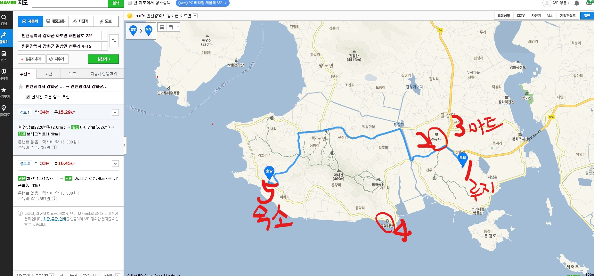

국가적 위기
1. 국가가 위기에 빠졌다는 국민적 합의
2. 무엇인가 해야한다는 국가적 책임의 수용
3. 울타리세우기. 해결해야할 국가적 문제를 규정하기위한 조건
4. 다른 국가의 물질적이고 경제적인 지원
5. 문제 해결 방법의 본보기로 삼을 만한 다른 국가의 사례
6. 국가의 정체성
7. 국가의 위쳉 대한 정직한 자기평가
8. 역사적으로 과거에 경험한 국가위기
9. 국가의 실패에 대처하는 방법
10. 상황에 따라 유연하게 대응하는 국가의능력
11. 국가의 핵심 가치
12. 지정학적 제약으로부터의 해방
